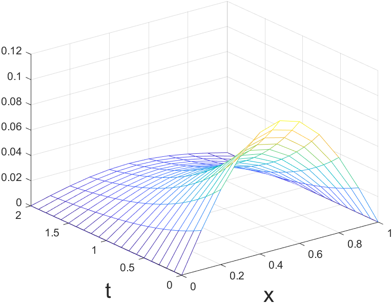

FDM有限差分法
📢该推文部分内容是作者个人猜测，谨慎阅读。欢迎在评论区纠正！
⛏ 作者正在摸鱼，该推文尚未完成
微分方程往往是连续的，可计算机更偏好以离散的视角观察世界。如何用计算机求解微分方程？FDM给出了一种近似计算方法。
理论
✋Q：为什么要近似？知道解析式不能直接求出导数吗？
🧐A（个人猜测）：MATLAB的符号函数可以实现求部分导函数解析式的功能了（并不知道怎么实现的）。相比DFM是数值的，可以求解没有导函数，以及函数只有数据点的情况，更加普适。在运算量上，说不定也有优势。
误差分析
Error
- round-off error
- truncation error
truncation error
$h>0,x<\xi<x+h;h<0,x+h<\xi<x$
$x\rightarrow y$ 唯一，而 $x\rightarrow y^\ast$ 和 $h$ 的取值相关。FDM求解的是 $y^\ast$ ，选择的映射方式不同，解的值 $y^\ast$ 也不同。
对比求导表达式，当 $h\rightarrow 0$ 时，收敛到理想值。步长 $h$ 绝对值越小，精度越大，运算量越大。
不同的映射方式分为forward difference, backward difference和central difference。他们的误差都是 $f’’(\xi)h$ 。
应用
求解1-D数理方程
Explicit Method
Implicit Method
Crank-Nicolson Method
MATLAB仿真
Explicit Method1
2
3
4
5
6
7
8
9
10
11
12
13
14
15
16
17
18
19
20Alpha = 1/pi^2;
k = 0.1; % step of time
h = 0.1; % step of space
r = k/h^2;
t = 0:k:2;
x = 0:h:1;
u = zeros(length(t),length(x));
% 初始值设置
u(1,1:length(x)) = Alpha * sin(pi*x);
for n = 1:length(t)-1 % loop of time
for j = 1+1:length(x)-1 % loop of space
u(n+1,j)=(1-2*Alpha*r)*u(n,j)+Alpha*r*u(n,j-1)+Alpha*r*u(n,j+1);
end
end
mesh(x,t,u);
xlabel('x','FontSize',20);
ylabel('t','FontSize',20);
在编写程序时，状态随着$t$传播的感受十分直观。这与数学上解方程的感觉是不同的，也更加符合公式所描绘的物理图景。

本题的理论解
TODO List:
- Numberical Stability
参考
 wechat
wechat